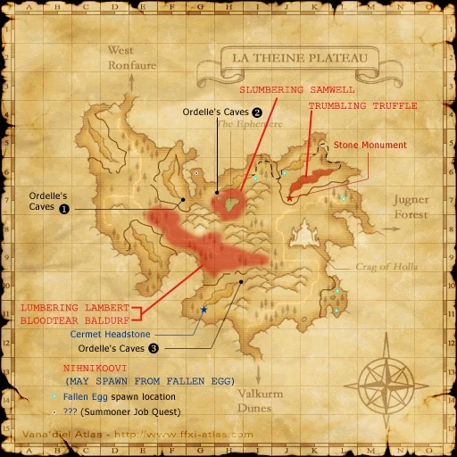

Level 75 reference · Zenith rules
|
|
| Zone | Level | Drops | Steal | Spawns | Notes |
|---|---|---|---|---|---|
| La Theine Plateau | 21-23 | 2 Respawn:10 minutes |
A, S, Sc | ||
|
HP = Detects Low HP; M = Detects Magic; Sc = Follows by Scent; T(S) = True-sight; T(H) = True-hearing JA = Detects job abilities; WS = Detects weaponskills; Z(D) = Asleep in Daytime; Z(N) = Asleep at Nighttime | |||||


Image source
Notes
- Both spawn along the road between (E-7) and (J-9), as marked for Lumbering Lambert and Bloodtear Baldurf on the map.
- Both spawns act as placeholders for Lumbering Lambert (on Eden).
Adapted from Eden Wiki: Battering Ram · Contributors and history · CC BY-SA 4.0. Revision 3036. Layout, links and optional background text adapted for Zenith.